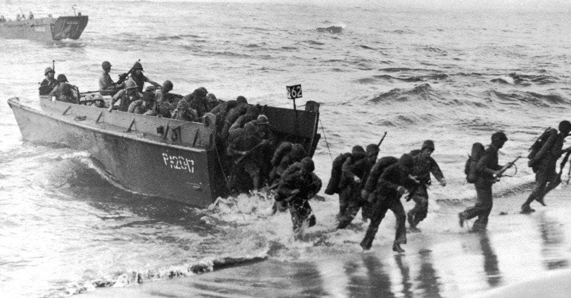
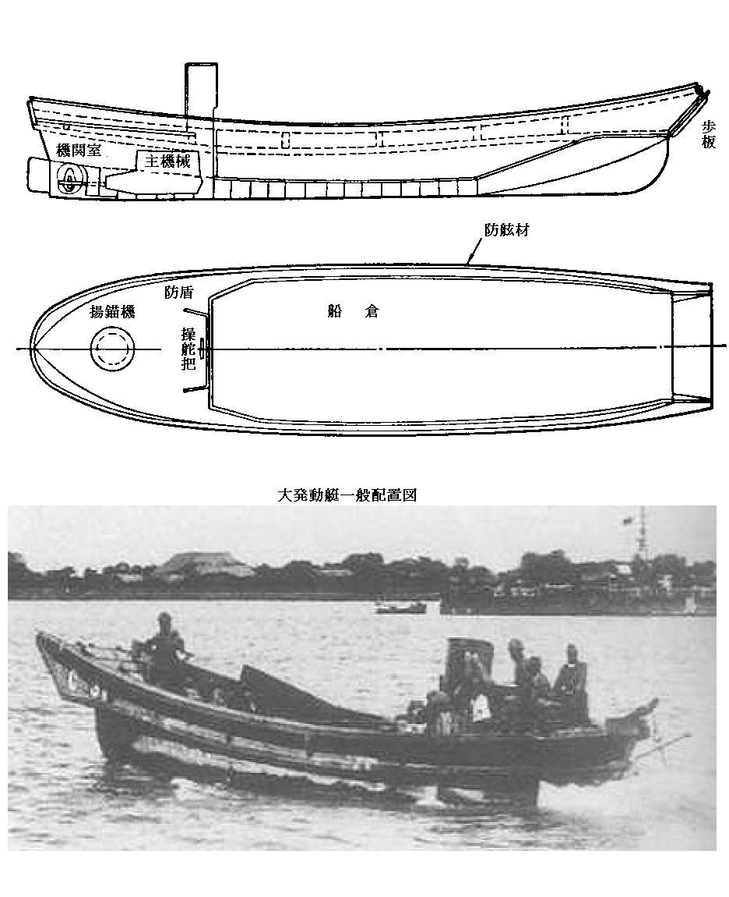
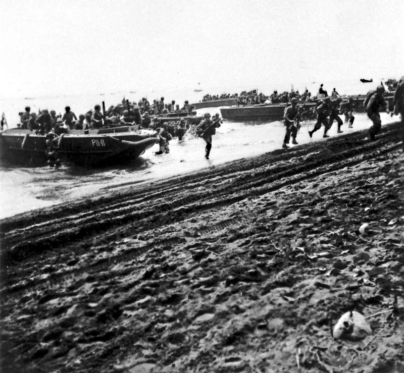
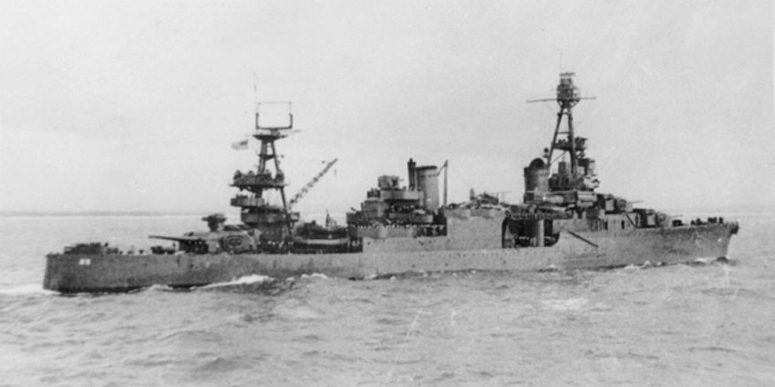
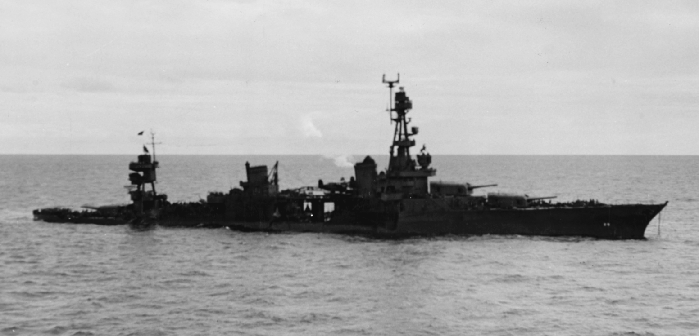
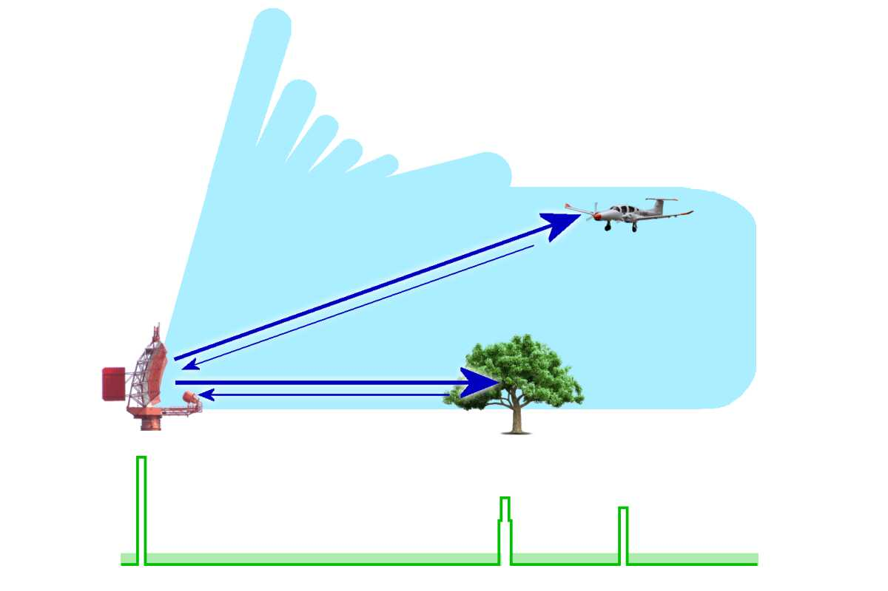
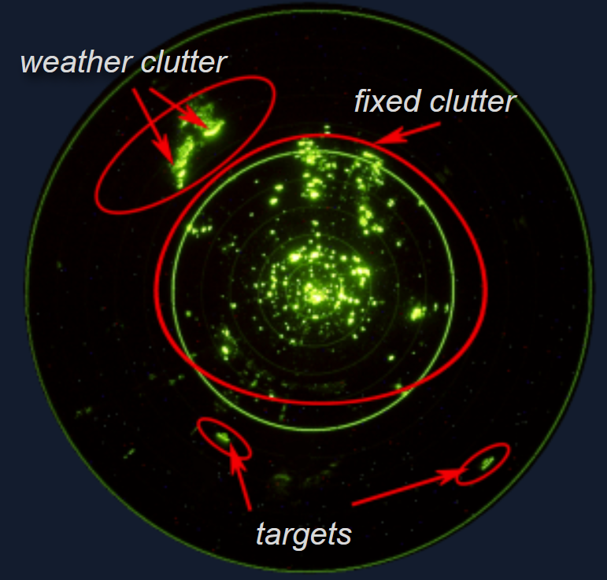
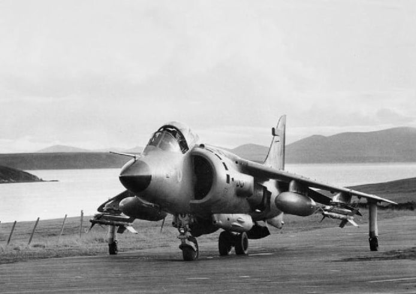
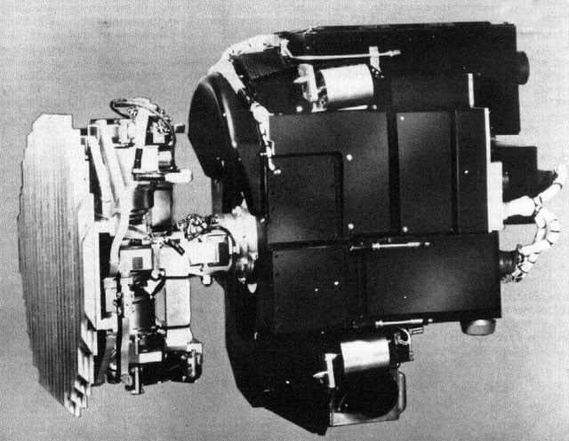

미해병대의 레이더 이야기 (1) - Clutter와 noise의 차이
게시: 2024-06-13T06:30:24+09:00
<몰라, 나도 처음 해봐> 1942년 8월 7일 과달카날에 처음 상륙한 미해병대를 지켜준 것은 전함과 순양함, 그리고 머리 위를 날아다니는 F4F Wildcat 전투기들이었는데, 이들은 USS Enterprise와 USS Saratoga 등의 항모로부터 이함한 것들. 미해병대의 상륙 목적은 일본군이 닦던 활주로를 점령하고 그걸 미군 비행장으로 완성하는 것. 그러기 위해서는 많은 병력과 함께 온갖 물자와 장비들이 필요했는데, 문제는 이게 미군이 역사상 거의 처음 해보는 대규모 상륙작전이라는 것.

(흔히 Higgins boat라고 불렸던 상륙용 주정(LCVP, landing craft, vehicle, personnel)은 1941년 5월에야 첫 시험이 이루어졌을 정도로 나중에 개발된 것.)

(미군의 LCVP는 일본군이 중일전쟁, 특히 상하이 전투때 사용한 다이하츠(大発, 대형발동기정의 준말)급 상륙정을 본 미해병대 장교가 히긴스라는 해군 납품업자에게 자신이 찍어온 사진을 보여주면서 만들어진 것.)

(이 사진이 1942년 8월 7일 실제 과달카날에 상륙하는 미해병대의 모습. 이때 사용된 주정들은 히긴스 보트도 아니고 LCP (landing craft personnel). 이물에 LCVP처럼 열리는 문이 없어서 병사들이 내리는 속도가 꽤 느릴 수 밖에 없었으며, 노르망디처럼 해변에 기관총과 야포로 방어하는 적군이 있었다면 더 많은 피해를 받기에 딱 좋았음.) 미해군과 해병대가 열심히 머리를 짜내서 준비를 했는데, 모두에게 첫 경험이다보니 당연히 구멍이 많았음. 가장 큰 문제는 라바울 등에서 날아오는 일본 폭격기들을 어떻게 막아낼까 하는 것. 항모에서 출격한 와일드캣 전투기들이 일본기들을 막아내면 되는데, 이들은 누가 어떻게 지휘하지? 당연히 항모의 전투기 관제사가 CXAM 레이더를 통해 지휘하면 됨. 그러나 소중한 항모들을 과달카날 섬 바로 인근에 가져다 놓는 것은 그야말로 자살 행위. 과달카날에 상륙한 해병대를 공격하러 날아온 일본기들이 항모를 발견하고 공격할 경우 모든 것이 끝장이기 때문. 그래서 항모들은 수평선 너머 먼 곳에 있어야 했음. 그래서 결국 CXAM 레이더를 갖춘 순양함 USS Chicago (CA-29, 9300톤, 32노트)에 전투기 관제사를 태워 과달카날 바로 앞바다에서 전투기들을 지휘하기로 함. 이 작전은 첫날의 공습에서는 꽤 잘 먹혔음. 시카고의 레이더가 약 70km 밖에서 일본기들을 탐지해내고 사라토가의 와일드캣들을 그 방향으로 효과적으로 유도한 덕분.

(USS Chicago. 1942년 과달카날 해역에서 촬영된 모습. 이 사진을 보면 시카고의 CXAM 레이더는 뒷 마스트에 설치된 것 같기도 하지만...)

(이 사진은 시카고의 1943년 모습. 어뢰에 피격된 뒤 회항하는 모습인데, 이 사진을 보면 뒷 마스트의 CXAM 레이더가 앞 마스트로 옮겨간 것이 보임.) <미해병대가 고정익 항공단을 고집하는 이유> 그러나, 그 뒤를 이은 일본기들의 공습에서는 잘 먹히지 않았음. 일본기들이 비교적 낮은 고도로 섬그늘에 숨어서 접근하는데다, 시카고의 CXAM 레이더는 탁 트인 넓은 바다에서는 적기를 그럭저럭 잘 포착했지만 근처에 큰 섬이 있는 경우 ground clutter (굳이 번역하면 지면 불요 반사파, unwatned ground reflection) 등으로 인해 항공기를 제대로 포착하는데 어려움이 많았기 때문. 물론 매우 숙련된 레이더 운용사라면 그런 클러터 속에서도 적기를 찾아낼 수 있었으나, 당시 미해군 CXAM 레이더 운용사들은 탁 트인 바다에서의 경험도 아직 많지 않았던 상황인지라 그런 것은 언감생심이었음.

(Clutter가 무엇인지, 왜 생기는 것인지, 당시의 A-scope에서는 어떤 식으로 보여지는지를 표현한 매우 단순화된 그림. 그러니까 clutter란 일종의 잡초 같은 것으로서, 같은 장미라도 꽃밭의 장미는 target signal이고, 보리밭의 장미는 그냥 clutter인 셈. 그러니까 같은 레이더 상에서도 철새 무리는 조류학자들에게는 target signal, 방공 미사일 포대장에게는 clutter.)

(레이더 스코프에 나타나는 것은 크게 목표물의 반사파 외에도, 목표물 이외의 모든 것에 반사되어 들어오는 신호인 clutter가 있고, 또 noise가 있음. 여기서 noise란 글자 그대로 잡음으로서, 구름이나 언덕, 새 등에 반사되어 오는 신호인 clutter와는 달리, 레이더 장치 자체나 인근 전기 장치에 의해 들어오는 회로의 잡음을 말함.)

(이렇게 근처에 육지가 있으면 목표물을 잘 잡아내지 못했던 것은 이로부터 거의 40년이 지난 뒤인 1982년 포클랜드 전쟁에서도 마찬가지. 영국 해군 시해리어에 장착된 Ferranti Blue Fox 레이더는 근처에 섬이 있으면 거의 아무것도 잡아내지 못했다고.)

(이것이 문제의 Ferranti Blue Fox 레이더. 심지어 근처에 섬이 없어도 그냥 파도가 거센 날에도 저공 비행하는 적기를 탐지할 수 없었다고 함.) 게다가 저 수평선 너머에 있는 항모에서 출격하는 전투기에 의한 요격은 아무래도 함재기의 연료 문제도 있고 시간차 문제도 있고 하여 언제까지나 거기에 의존할 수는 없었으므로, 재빨리 활주로를 닦은 뒤 빨리 지상발진 전투기들을 불러와야 했음. 물론 이건 시간이 걸리는 문제. 가령 활주로만 있다고 되는 것이 아니고, 연료 탱크들과 탄약고를 설치하고 항공기 정비와 수리를 위한 작업장도 만들어야 했는데, 이건 모두 시간이 걸리는 문제. 그리고 항모나 순양함의 레이더 없이 적기를 탐지할 조기 경보 레이더의 설치도 꼭 필요했음. 물론 복잡한 상륙 작전 준비 과정에서 그런 점들이 다 고려되었고, 육군의 조기경보 레이더 SCR-270과 대공포용 레이더 SCR-268도 몇 대씩 상륙용 화물선에 실려 과달카날 해역에서 하역을 대기하고 있었음. 문제는 그렇게 8월 7일~8일 2일간 레이더로 잘 탐지되지 않는 공습을 당한 뒤, 미항모 전단의 Fletcher 제독은 함재기 상실과 연료 부족, 그리고 무엇보다 소중한 항모들이 위험에 빠질까봐 철수를 결정했다는 것. 항모들이 그 호위함과 함께 철수하자, 화물선들도 '그럼 우리가 위험해지쟎아'라며 덩달아 철수. 더 큰 문제는 아직 싣고 온 각종 물자와 자재, 장비를 아직 절반도 하역하지 못한 상태였는데도 철수를 결정했다는 것. 그렇게 하역되지 못한 화물 중에는 육군용 레이더 SCR-270과 SCR-268도 있었음. 물론 이때도 순양함 구축함 등의 수상함들은 과달카날 해역에 남아 상륙한 해병대를 지원했지만, 이때 미해군 항모전단이 해병대를 버리고 간 쓰라린 원한은 오늘날까지도 미해병대의 뇌리에 새겨져 있으며, 해군-공군에 엄청난 규모의 항공단이 있음에도 미해병대가 (육군과는 달리) 고정익 항공단을 절대 포기하지 않는 계기가 되었다고.